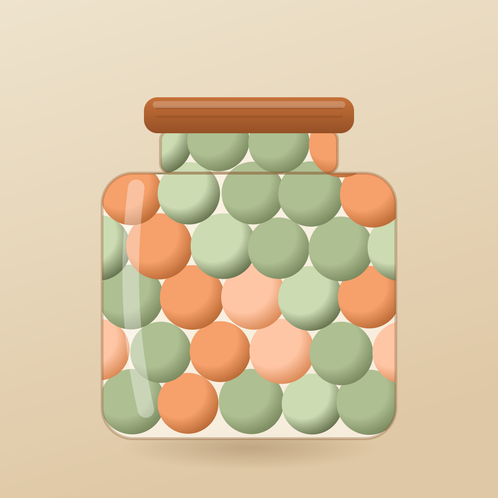

Notice
Pay attention to the everyday moments when someone makes you feel cared for, understood, or supported.
Jar of Marbles is a simple way to notice, remember, and celebrate the small moments of kindness that bring us closer to one another.
A thoughtful message. Someone showing up. A quiet act of generosity. Each one is a marble.

Pay attention to the everyday moments when someone makes you feel cared for, understood, or supported.
Keep those moments somewhere meaningful, instead of letting them disappear into the pace of everyday life.
Let your collection become a reminder that trust and connection are built through small, consistent acts.
Love and trust rarely arrive all at once. They grow through the moments when we show up for one another.